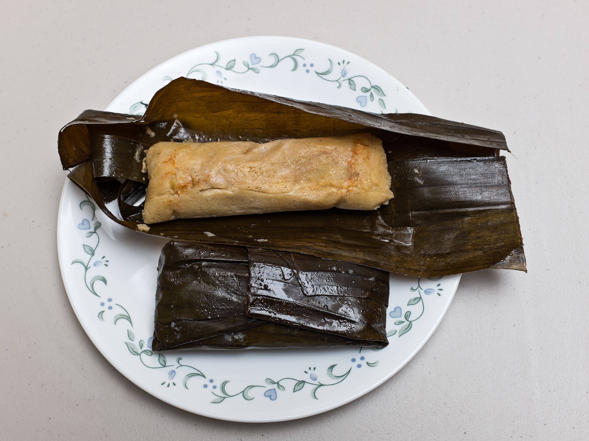

Tamales
Tamales is a food that is very common for El Salvador it is made corn dough wrapped in a leaf and it has chicken inside of it.

Pupusas is the most famous food for what El Salvador is known for they are known for the Pupusas which is also made of corn dough or rice dough and it has cheese and you can add pork meat to it aswell.
Tamales is a food that is very common for El Salvador it is made corn dough wrapped in a leaf and it has chicken inside of it.